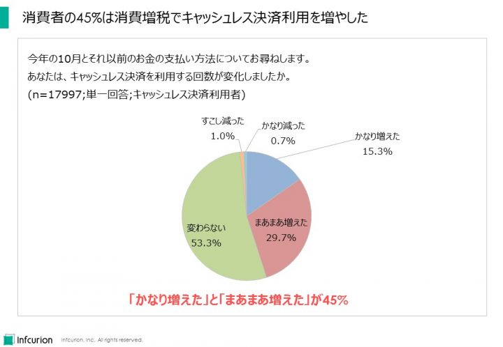
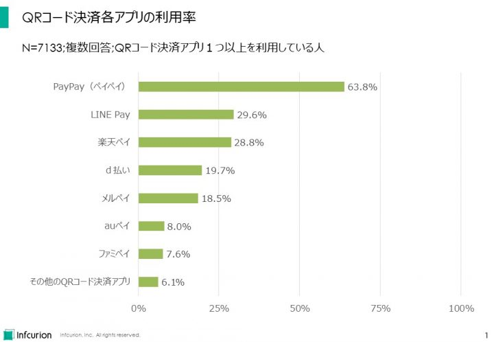

２０１９年は日本のフィンテックが大きく様変わりした年だと感じます。いまや日本経済の一大トピックとして、新サービス・法制度・企業の合従連衡といった様々な動きが、間断なく報じられるというダイナミックな領域に変貌。その勢いには、業界ウォッチャーも時に息切れを感じたほどでした。
黎明期を脱し、市場変革の大きな力を見せつけ始めた日本のフィンテック。その２０１９年の動きを、インフキュリオンが選んだ１０大ニュースで振り返りたいと思います。
目次
キャッシュレス決済利用が急増 消費者還元が効果
日本経済全体における２０１９年の最大のニュースが消費増税でした。それに連動して始動した「キャッシュレス・消費者還元事業」はキャッシュレス決済利用促進の一大イベントとなりました。増税を挟んだ数か月間でキャッシュレス決済サービスのユーザーは大幅に増え、利用回数も増大しています。日本のキャッシュレス決済とフィンテックの進化に大きなインパクトを与えました。
その効果は２０１９年１０月に実施した当社の独自調査で確認できています。「１０月とそれ以前でのお金の支払い方法の変化」についての設問で、45%が「キャッシュレス決済を利用する回数が増えた」と回答。消費者にとって、消費増税のタイミングがキャッシュレス決済利用を増やすタイミングともなりました。

消費増税でのキャッシュレス決済利用増大
なかでもQRコード決済サービスのユーザー獲得力は目を見張るものがあります。3月調査ではQRコード決済利用者は2万人のうち11.6%だったものが、10月調査では35.7%と半年余りで3倍以上に拡大。アプリで決済完了できるという利便性もさることながら、やはり各社の大型キャンペーンが大きな効果を発揮したと思われます。
キャッシュレス決済利用が増えたのは、ユーザーだけでなく加盟店も同じです。ここでも大きな存在感を放っているのはQRコード決済。いままでキャッシュレス決済に対応していなかったお店でも、QRコードなら使えるというところが増えているというのは、読者も実感できることだと思います。専用の決済端末が不要で、加盟店手数料も低い水準だったり無料だったりと、導入しやすい条件が揃っています。熾烈な競争を繰り広げているサービス事業者各社が、「面取り合戦」に勝つため加盟店獲得に大きなリソースを投入していることも市場としては大きなプラスです。筆者の生活圏でも、小さなクリーニング店や家族経営のお弁当屋さんなど、いままで現金ONLYだったところまでQRコード決済が使えるようになっていることに気づいたときは嬉しい驚きを感じました。
このように、キャッシュレス利用環境の整備という点ではQRコード決済が大きく貢献していますが、カード決済環境整備も大きく進展しています。２０１８年６月に施行された改正割賦販売法が規定する、「カード決済端末のIC化対応」がその要因。店舗レジでのカード決済が、「磁気ストライプ＋サイン」よりも安全性の高い「ICチップ＋PIN」という方式にシフトしてきています。これも筆者の体感ですが、既存加盟店も、決済端末のIC化対応を進めるタイミングで、電子マネーやQRコード決済など他のキャッシュレス決済サービスにも同時に対応するケースが多いと感じます。セキュリティを高める施策が、キャッシュレス決済の利便性を高める相乗効果も生んでいるように見えるのは嬉しいことです。
キャッシュレス決済の拡大は、取引の電子データ化とペーパーレス化の前提条件でもあり、フィンテックのさらなる拡大にも不可欠です。２０１９年のキャッシュレス決済の躍進で、日本のフィンテックの環境整備も大きく進みました。その勢いは２０２０年にも続いていきます。
関連記事
- 「消費増税とQRコード決済の急拡大」、インフキュリオン・インサイト、２０１９年１０月３１日
- 「増税後のQRコード決済利用率が3倍に拡大。最も利用されているアプリはPayPay」、インフキュリオン・グループ、２０１９年１１月７日
PayPayが圧倒したQRコード決済 乱戦は続く
上でも触れたとおり、QRコード決済の躍進は２０１９年の大きな動きの一つでした。２０１８年までに始まっていた「LINEペイ」、「楽天ペイ」、「d払い」、「PayPay」に加え、さらに２０１９年には「メルペイ」、「au PAY」、「ファミペイ」も参入を果たしました。
競争激化するQRコード決済市場ですが、その中で圧倒的存在感を放っているのが「PayPay」。２０１９年１０月の当社独自調査では、QRコード決済アプリ利用者7133人のうち、63.8%が「PayPay」を利用していると回答。２番手集団の「LINE Pay」（29.6%）、「楽天ペイ」（28.8%）を大きく引き離していることがわかりました。

QRコード決済各アプリの利用率
そんな中、２０１９年１１月に発表されたのが、「PayPay」を展開するZホールディングスとLINEの経営統合。両サービスの行く末がどうなるのかまだわかりませんが、当面の間は別個のサービスとして存続していくとみられます。当社調査で１位・２位である2者による「強者連合」の誕生。相互に加盟店開放するだけでも大きなインパクトがありそうです。
また、順位で見ると5位ではありますが、「メルペイ」の急拡大は注目に値します。QRコード決済を開始したのは２０１９年３月と後発にも関わらず、高い利用率を実現。やはり「メルカリ」ユーザー基盤というのが大きな強みとなりました。また、決済サービスという観点からも、「メルカリにおける売上金」を決済原資にできるというCtoCプラットフォームならではの利用導線はユーザーにとっても利便性が高いということがわかります。
ソフトバンク陣営の「PayPay」、ドコモの「d払い」を追撃するかたちで始まったのが、同じく携帯キャリアのKDDIによる「auペイ」。KDDIは単にQRコード決済に参入しただけではありません。2月には銀行・決済・保険などを束ねる包括的な金融持ち株会社「auフィナンシャルホールディングス」を設立しています。スマホ起点でフィンテックサービスを展開していく戦略では、決済サービスはその要となります。当社の独自調査では国際ブランドプリペイドカードとして首位にある「au WALLET プリペイドカード」と並び、「auペイ」というアセットを手に入れたKDDI。携帯キャリア3社の戦いは本格化したばかりと言えそうです。
今まで巨大な顧客基盤を持つテック企業・携帯キャリア・流通小売を中心に動いていた感のあるQRコード決済に対する銀行業界の取り組みも本格化しました。キャッシュカードで即時引き落とし型の決済ができる「J-Debit」を運営する電子決済推進機構は１０月３１日、金融機関の口座からの即時払い型のQRコード決済「BankPay」の取扱いを開始。また、5月にはゆうちょ銀行の「ゆうちょPay」も始まっています。お金を扱う本家本丸である銀行によるQRコード決済。事前チャージやクレジットカード登録等することなく決済サービスを利用できる点や、商圏における地方銀行の絶大なブランド力は、ユーザー獲得には大きなプラスになると見られます。
２０１９年は「PayPay」が圧倒した印象のQRコード決済。しかし最終的な決着がついたわけではありません。様々な勢力の群雄割拠、そして乱戦は２０２０年以降も続いていきそうです。
関連記事
- 「消費増税とQRコード決済の急拡大」、インフキュリオン・インサイト、２０１９年１０月３１日
- 「増税後のQRコード決済利用率が3倍に拡大。最も利用されているアプリはPayPay」、インフキュリオン・グループ、２０１９年１１月７日
新型の与信サービスが拡大
「金融」とは「お金の融通」。必要とする人に必要なだけお金を廻し、役割を果たしたお金がまた戻ってくるというのが理想です。その意味で、「与信」すなわち相手を信用してお金を貸す行為は金融の根幹。グローバルで見てもフィンテックのコアに位置する重要な領域ですが、２０１９年は国内でもフィンテック型の与信サービスが拡大してきました。
まず挙げられるのは、与信判断において「信用度」を測る指標となるスコアの算出。米国の「FICOスコア」や中国の「芝麻信用」などが国内でも有名です。日本ではみずほ銀行とソフトバンクが設立したJ.Score（ジェイスコア）がAIを用いる独自手法で「AIスコア」を提供開始、個人向け融資の「AIスコア・レンディング」を展開しています。ユーザーは「生年月日」や「最終学歴」、「勤務形態」、「年収」、などの情報を提供したり、「みずほ銀行の口座情報」・「ソフトバンクの回線情報」など指定された他サービスからの情報取得を許諾することでより高いスコアを得ることが可能となっています。考え方としては、ユーザーの「人となり」を判断するデータが多いほど正確なスコアが算出できる、というものです。2019年11月末には登録ユーザー数が早くも100万人を突破したとのことで、今後の発展が期待できます。
信用スコアではLINEも、LINEの利用状況等を踏まえて算出する「LINE SCORE」を提供開始。5か月後の２０１９年１１月には登録ユーザーが300万人を突破と、こちらも勢いがあります。スコアはスマホ完結の個人向け融資である「LINE Pocket Money」に活用しています。個人向けのスマホ完結型融資ではさらにKDDIも「au WALLETスマートローン」を４月から提供開始しています。
中小事業者向けの融資でもフィンテック型サービスが定着してきています。決算書を主な情報源とする従来の与信手法に対して、会計データや口座明細などに蓄積されている日々のお金の動きに重きを置く点が特徴となっています。必要な融資を受けることが難しかった事業者も成長資金を借り入れることができるようになるなどの効果が生まれています。「弥生会計」、「やよい青色申告」のデータを活用するアルトア、クラウド会計のfreeeと富士通、三井住友カードの3社が提携して提供する「オファー型融資」、クラウド会計のマネーフォワードの「マネーフォワード ビズアクセル」などサービス提供者も増え、存在感を増しています。フィンテック・スタートアップと既存業者の提携というフォーメーションで、従来手法ではリーチできなかった中小事業者の資金需要への対応を可能としている点は、日本のフィンテックの成熟度を示しているともいえます。
建機メーカーのコマツ、三井住友銀行、そして官民ファンドのINCJという異色の組み合わせも登場しました。7月に設立したランドデータバンクでは、建機の遠隔監視で得られるデータを中小の建設業者への与信など金融サービスに活用する方針です。事業会社が持つデータを金融に活用するという、「データ経済」時代にふさわしい新しい金融の幕開けとも言えそうです。
個人の買い物シーンでは、非クレジットカード型の後払いが、オンラインショッピングを拡大しています。利用限度額を低めに設定した、「小額・低リスク」を特徴とする新たな信用サービスと考えることができます。欧米諸国においてもAffirm、PayPal Credit、Klarnaなど後払いサービスが拡大していることからも、クレジットカードでは埋められていない消費者ニーズを汲み取ったサービスであるといえます。日本国内では２０１８年度取扱高3000億円のネットプロテクションズが最大手ですが、GMOペイメントゲートウェイの「GMO後払い」、Paidyの「Paidy」など複数の事業者が活動する成長領域です。メルカリも「メルカリ」の利用実績に応じてリアル店舗で後払いが利用できる「メルペイスマート払い」（「メルペイあと払い」から改称）を提供開始。さらなる拡大が見込める後払いサービスに対する規制の必要性は経済産業省の割賦販売小委員会での論点となり、２０１９年を通して議論が継続されるに至っています。
信用スコア、個人向けスマホ完結融資、中小事業者向け融資、後払い。スマホとデータを駆使した新しい与信サービスが定着し始めた年となりました。
関連記事
- 「信用スコアと個人ローン体験記」、インフキュリオン・インサイト、２０１９年１１月１９日
デジタル通貨とフィンテックがG20の論点に
年２回開催される「G20財務相・中央銀行総裁会議」。２０１９年は６月に福岡にて、１０月に米国ワシントンDCで開催されました。金融政策について世界規模での議論が行われる場において、デジタル通貨とフィンテックが取り上げられたのは注目に値します。
背景にあったのは、２０１９年６月にFacebookが公表したデジタル通貨「Libra」の計画。ブロックチェーンを用いて実現されるという点でビットコインの流れを汲むものですが、主要国の通貨（国債）のバスケットに連動させることで為替レートの乱高下を抑える設計となる「ステーブルコイン」であること、そして国境を越えてネット空間で流通するグローバル通貨を指向する点などがポイントとなっていました。Facebookというテック企業の巨人が推進するものである点で技術的な実現性は高いものと見られました。それだけに、ユーザーの個人情報の取扱いの不備について悪い面で注目を浴びていた同社の取り組みは、当初からネガティブな見方がされがちだった面もあります。
結果的に、Libra構想は２０１９年末となっても大きな進展は見られません。国際送金においてネックとなるマネーロンダリングや各国の金融法制度対応に関する考慮がLibra側に足りなかったと言われても仕方ありません。１０月のG20財務相・中央銀行総裁会議閉幕後に出されたプレスリリースでは、「グローバル・ステーブルコイン」に関する規制の必要性が明記されましたが、これはLibraを念頭に置いたものと考えてよいでしょう。
Libra構想への一連の反応は、デジタル通貨とフィンテックにとってマイナスばかりではないと筆者は考えます。国をまたいで送金できてしまうサービスを野放しにすることはあり得ませんので、適切な規制が必要なのは当然。むしろLibraによって、グローバルなデジタル通貨が実現可能なものであることが印象づけられました。日本においても麻生財務大臣がフィンテックイベントにおいてデジタル通貨に関して発言するなど、政府における問題意識も高まっていることがわかります。
１０月のG20財務相・中央銀行総裁会議のプレスリリースでは、「金融技術革新による潜在的な便益」つまりフィンテックが持つ潜在的な便益を認識しているとの一文があります。フィンテックが、一業界内のサービス開発動向という枠を超えて、グローバル経済に影響を及ぼす大きな取り組みに成長したことを世界の首脳が認めているというのは、フィンテック関係者は誇ってよいことだと思っています。
関連記事
- 「仮想通貨「Libra（リブラ）」に関する見解」、インフキュリオン・インサイト、２０１９年７月１５日
クラウド化する銀行 デジタルバンキング加速
スタートアップ企業による革新的サービス提供には、クラウドが不可欠。ユーザーとの対話を通してサービスの質を向上していくには、硬直的なITインフラが足かせとなってしまうからです。また、スタートアップではない事業会社にとっても、ITインフラの調達と管理は非コア業務。クラウド活用でそれを外だしにするということは理にかなっています。クラウド活用は多くの企業にとって当然の選択肢となっています。
保守的なイメージで、堅牢なITインフラを自前で構築・運用するイメージの強い銀行業界でも、クラウド活用に前向きに取り組む動きが出てきました。多くの場合、これはフィンテックによるサービス革新を取り込み、「デジタルバンキング」を加速するための施策と位置付けられます。
特に印象的なのは北國銀行の取り組み。２０１９年１１月、銀行業務の根幹を支える勘定系システムを、マイクロソフトのクラウドである「Azure」に移行すると発表しました。銀行にとっても最も重要で、高い安定性と価格のメインフレーム機がまだ多く使われている勘定系システムをクラウド移行というのは前代未聞。既に北國銀行は日本ユニシスが提供しているWindowsベースの勘定系システム「バンクビジョン」を使っているため、「Azure」とはもともと親和性が高いと見られます。クラウド勘定系時代の幕開けとなる取り組みに拍手を送りたいと思います。
ふくおかFGも１０月、新たに設立するデジタル銀行の勘定系を「Google Cloud Platform」上に構築すると発表しました。地銀本体がクラウド化というのは業務やデータの移行がネックとなりますが、新銀行のインフラの新規構築というのはクラウドとも相性がよさそうです。まさに、スタートアップがクラウド前提なのと感覚が似ており、銀行業界によるサービス革新の新しいトレンドにもなりえる重要な動きといえます。
「Azure」、「Google Cloud Platform」とくれば「アマゾン ウェブ サービス（AWS）」。こちらも銀行での活用事例が出てきています。住信SBIネット銀行は、インターネットバンキングシステムをAWSに移行中。２０２０年３月完了予定です。店舗を持たないネット銀行にとって、インターネットは唯一の顧客チャネル。インターネットバンキングの重要性は勘定系にも匹敵します。
日本銀行が２０１９年５月に発行した「銀行・信用金庫におけるデジタライゼーションへの対応状況」と題したレポートでは、日本の金融機関が思い描くクラウド活用の方向性がまとめられています。金融機関へのアンケート調査結果をまとめたものですが、「クラウドサービス等の利用の現状と先行き（図表１１）」では、勘定系システム・インターネットバンキングシステム・それ以外の重要システム・それ以外の一般システムという４つのカテゴリー全てにおいて、「自行で占有するITインフラ」（プライベートクラウド含む）の利用は減少していき、パブリッククラウド利用が増えるとの見通しが出ています。また、「先行きのパブリッククラウド利用の想定割合（図表１２）」では、パブリッククラウド利用意向は大手行等で特に強く、地域銀行でも一定数が利用を想定しているとの結果です。
みずほFGが、出来たばかりの新勘定系システムを減損処理しなければならない時代。銀行のITシステムも大きな変動期に入ってきました。
地銀・証券連携が進める地方銀行フィンテック
「フィンテック」という言葉が注目を浴び始めた２０１５年時点では、「フィンテックは銀行の破壊者」という扇動的な見方が一部でありました。我々は当初から、「フィンテックは金融サービスの利便性を高める取り組みであって、金融サービスの利用者層を広げることで、ユーザーと金融事業者の双方にメリットが大きい」と主張していました。
関連記事：
- 「事業者ローン領域で進む大銀行とFinTechの連携」、インフキュリオン・インサイト、２０１５年１２月４日
とはいえ、銀行にとってフィンテック企業との連携やスマホ対応にはシステム投資が必要。余力の少ない地方銀行などでフィンテックが進めにくい要因ともなっていました。
それを勝機とみて攻勢をかけているのが証券業界。スマホ証券設立、フィンテックアプリ提供など地方銀行のデジタルサービス支援に乗り出しています。地銀を通して全国の消費者にフィンテックサービスが身近なものになっていくのは意義深いことです。
９月に島根銀行と資本・業務提携を結んだSBIグループ。「第４のメガバンク構想」を掲げて地銀連携に本格的に乗り出しています。フィンテック・スタートアップへの出資や海外フィンテック企業との合弁などフィンテック促進に尽力してきた同グループは「SBIグループ、ベンチャー企業、地銀が共同で使えるシステムをクラウド上につくる」とのこと。まさにフィンテックを機軸とする地銀再編が進みそうです。
地銀との新証券会社を７社立ち上げている東海東京フィナンシャル・ホールディングスも、地銀連携戦略を進めています。１１月には新アプリ「お金のコンパス」を東海東京証券からリリース。資産管理（マネーフォワード）、ロボアドバイザー（お金のデザイン）、小額投資（One Tap BUY）、お釣り投資（TORANOTEC）など、出資先フィンテック企業のサービスを一括で利用できるというもの。今後は地銀のバンキングアプリとの連携を進めていく構想で、こちらも地銀顧客にとってのフィンテック利用の敷居を劇的に下げることが可能になりそうです。
８月には野村ホールディングスと山陰合同銀行が金融商品仲介業務における包括的業務提携の基本合意を発表。プレスリリースには「フィンテック」の言葉はありませんが、「利便性・サービスレベルの向上・お客様満足度の向上」という目的に対して、今後どのようフィンテックを活用していくかは注目です。
完全キャッシュレスの商業施設が登場 「現金顧客」へも新たな対応策
店舗のキャッシュレス化については「店舗の現金レス化と事前決済が広がり始める」として２０１８年１０大ニュースでも取り上げていました。２０１９年は特に「キャッシュレス店舗」が本格的に進み始めた印象です。JR東日本は駅ナカのコンビニ「ニューデイズ」でセルフレジ専用のキャッシュレス店舗の展開を開始。７月に１号店を武蔵境駅にてオープンし、１１月末までに首都圏で３店舗、さらに新幹線盛岡駅ホームでも試験営業を開始いました。JR東日本の利用客の多くが交通系ICカードを持っているご時世、駅ナカと完全キャッシュレスは相性がよさそうです。
街中のコンビニでは無人コンビニのロボットマート、カフェや飲食ではDevelopers.IO CAFE（デベロッパーズ・アイオー・カフェ）、大江戸てんや、上島珈琲大手町フィナンシャルシティ店、などもキャッシュレス。ほかにもラーメンの七宝麻辣湯も一部店舗の完全キャッシュレス化を進めています。
このように、キャッシュレス店舗が広がりを見せていますが、特に注目したいのは６月に九州・鹿児島に登場したキャッシュレス商業施設「よかど鹿児島」。複数のテナントが入る商業施設が全面キャッシュレスという大変珍しい取り組みです。さらに面白いのは、「よかど鹿児島」は全国初の、銀行直営の商業施設であること。鹿児島銀行が、新たに整備した新本店別館ビルに「よかど鹿児島」を開業したのです。
さらに鹿児島銀行は、独自のQRコード決済サービス「Payどん」の提供も開始。「よかど鹿児島」でも当然使えます。新決済サービスを開始する際には加盟店獲得が大きなネックとなるのですが、自前の商業施設で使えるというのは理にかなったことでありました。開業後の報道によると、「よかど鹿児島」で最も利用されてい決済手段はクレジットカード（40%）、それに次いで「Payどん」（30%）。残りが電子マネーやJ-Debitとのことです。
ところで、「よかど鹿児島」に限らずどんなキャッシュレス施設でも、キャッシュレス決済手段を持たない「現金顧客」への対応が重要な検討課題となります。いくら事前の周知に努めたとしても、「現金顧客」が来店する場面は必ず生じます。今のところ、多くの事業者では、来店直後に現金は使えない旨を案内することが多いようですが、それで顧客が立ち去ってしまう場合もあるようです。
この点でも、鹿児島銀行の施策は大いに参考になります。「完全キャッシュレス」の周知に力を入れつつ、「現金顧客」のためにプリペイドカードの自販機を設置したりと、準備に余念なかった模様です。しかし実際に開業してみると、実は「現金顧客」でもほぼ確実に携帯しているキャッシュレス決済サービスがあることがわかったそうです。それは「銀行のキャッシュカード」。正確には、そこに搭載されているJ-Debitです。新しくプリペイドカードを入手したりアプリをインストールするよりも、既に持っているカードを使うというのが「現金顧客」にとって抵抗感が少ないというのは十分想像できます。実際、「よかど鹿児島」では、「現金顧客」にはJ-Debitをご案内して解決となることも多いとのことです。
キャッシュレス施設が増えていく中、重要性を増す「現金顧客」への対応策。その点においても、鹿児島銀行の事例は大いに参考になると思います。
「よかど鹿児島」でのJ-Debitの有効性については以下の記事を参考にしました。
- 「銀行直営の完全キャッシュレス商業施設と独自QRコード決済が示す地方銀行の将来像」、カードウェーブ2019年9・10月号
オンライン本人確認の実運用開始
一年前の「フィンテック１０大ニュースで２０１８年を振り返る」でも取り上げたオンライン本人確認。口座開設時の本人確認手法などを定めた犯罪収益移転防止法（犯収法）の施行細則が２０１８年１１月に改正されたことで、従来は書類ベースだった本人確認が、オンラインで完結させることができるようになりました。
２０１９年はそんなオンライン本人確認の実運用が急速に広まった年。「LINE Pocket Money」など金融サービスも提供するLINEも「スマホでかんたん本人確認」を開始しています。「本人情報の入力と身分証の撮影」、「ガイドに従ってのアクション（左右を向くなど）」、「自身の顔と身分証を同時に撮影」、「身分証を動かして、身分証の側面や厚みを映す」という4つのステップで本人確認を完了させることができます。
ほかにもメルペイの「アプリでかんたん本人確認」、オンライン融資のアルトアの「本人確認アプリ」などすでにオンライン本人確認の事例は広まっています。アルトアが利用しているのは、トラストドック社の「TRUSTDOC」。同社によると「日本で唯一のeKYC対応デジタル身分証アプリ」というものです。また、生体認証で有名なLIQUICもオンライン本人確認の「LIQUID eKYC」を提供しています。海外では既に一般的だったオンライン本人確認ですが、日本では導入が遅れていました。法制度改正と同時に広く普及し始めた背景には、こうした認証技術のプロの存在があります。
さらに興味深い動きとしては、セブン銀行と電通国際情報サービス（ISID)が１月に合弁で設立したACSiON（アクシオン）があります。サービスはまだ準備中のようですが、報道によるとATMを活用したオンライン本人確認サービスを計画している模様です。コンビニATMで地銀やネット銀の口座開設時の本人確認ができるようになる未来もすぐそこと思われます。
関連記事
- 「信用スコアと個人ローン体験記」-「本人確認もスマホ完結」、インフキュリオン・インサイト、２０１９年１１月１９日
情報セキュリティにまたしても脚光
２０１８年中は巨額の仮想通貨流出事件などが社会の注目を浴びましたが、残念ながら２０１９年もフィンテック領域での情報セキュリティが事件となりました。言わずと知れた「7pay（セブンペイ）」の事件です。
７月１日に開始したコード決済サービス「7pay」ですがサービス開始から数日で不正被害が発覚、７月１１日のログイン停止を経て、９月３０日にはサービス廃止となりました。
２０１８年の仮想通貨流出事件では数十億円、数百億円の被害がありました。それに比べると被害額が抑えられていたことは幸いでしたが、運営企業に与えたインパクトは甚大です。重要な消費者接点である決済サービスにおいて、予期せずして大きな戦略転換を強いられることになりました。
ユーザーの大切なお金を扱うフィンテック。情報セキュリティを確保しながら、サービス品質での競争していくことで、フィンテックがますます発展していくよう願っています。
スタートアップの企業価値高まる 成長力に注目
日本のフィンテックが始まった年はいつか？、と考えてみると、一般社団法人Fintech協会が設立された２０１５年という回答がしっくりきます。スタートアップと大手企業が集うフォーラムとして、情報連携・政策提言といった活動で業界を盛り上げてきました。
当時は一般にはなじみのなかったフィンテックですが、近年のキャッシュレス決済利用の高まりもプラスに作用し、いまや日本経済の論点の一つとなるほどに成長しています。
そうした日本のフィンテック・ムーブメントを担うスタートアップ企業への高評価を示す報道がありました。
関連記事
- 「フィンテック、金融の空白補う 企業価値200億円超7社」、日本経済新聞、２０１９年１１月２５日
記事によれば、企業価値２００億円を超えたフィンテック企業は７社で、これは他業種よりも多数であるとのこと。この「日経NEXTユニコーン調査」では１４社のフィンテック企業を調査したとのことですが、すれぞれ数十億円から数百億円という評価となっています。フィンテックサービスの成長力が注目された結果であると考えます。
２０１９年１２月１７日、クラウド会計のfreeeが東証マザーズに新規上場しました。今後も、日本のフィンテックを牽引するスタートアップ企業が生まれ成長し、社会変革を継続していくよう願っています。


{kind=link}
{kind=link}